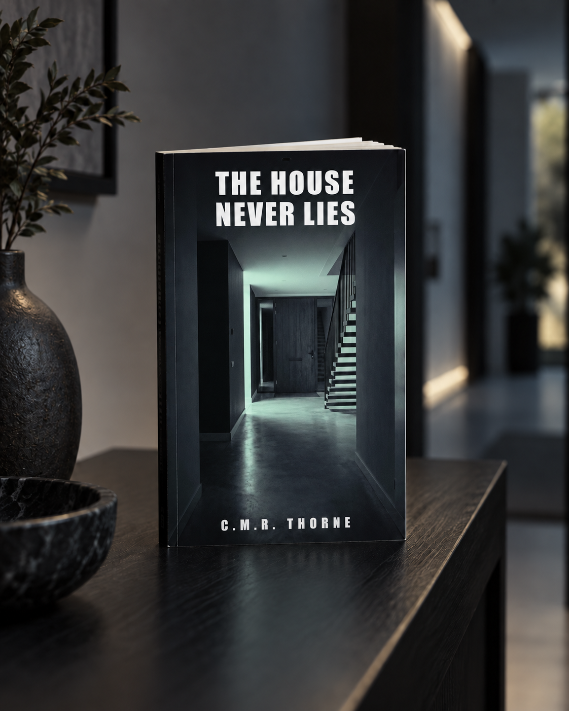
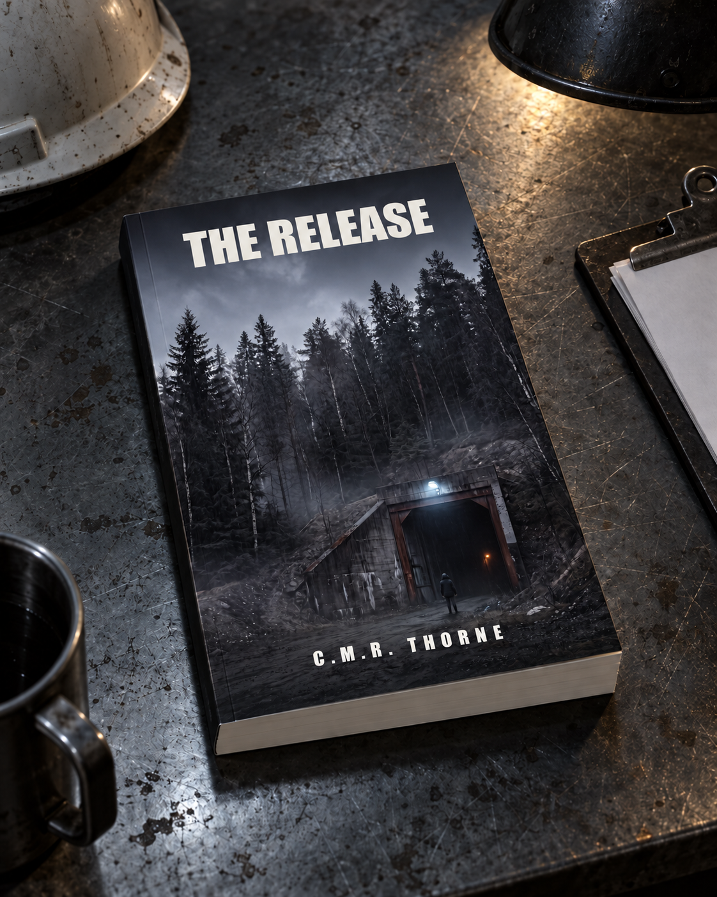

CASE 01

Available now
The House Never Lies
The front door opened at 3:12 a.m. While he was asleep.
View on AmazonAbout this book and an excerpt LOWLANDSPRESS
LOWLANDSPRESSPsychological thrillers by C.M.R. Thorne, in four languages. In every book, a device was watching.
Pick a book

The front door opened at 3:12 a.m. While he was asleep.
View on AmazonAbout this book and an excerpt
Five dead. A forged signature. And a case that stayed buried for eight years.
View on AmazonAbout this book and an excerpt
His watch recorded the last heartbeat. The heart in that graph doesn't beat like Bram's.
View on AmazonAbout this book and an excerpt
A DNA test reveals that the boy at her kitchen table is not the boy she gave birth to.
View on AmazonAbout this book and an excerptAn old dashcam clip proves the investigation into Niek Veldkamp's death was built on the wrong hour.
View on AmazonAbout this book and an excerpt
The neighbour's doorbell puts a name to the man on the step. It isn't him.
View on AmazonAbout this book and an excerptThe paperback is out. The ebook follows shortly.
A school pass logged who went in that afternoon. Her own scan is at the wrong hour.
Book seven is being written. Working title, Dutch. No publication date yet.
Stores show what is being read and talked about, and an unknown author depends on that more than on anything else. A few honest lines are enough. Leave them wherever you bought the book; the direct links for Amazon are below.
Write a review: